워드프로세서-(구-1급) (2005-05-22 기출문제)
1과목: 워드프로세싱 일반
1. 다음 중 워드프로세서의 표시기능에 대한 설명으로 옳지 않은 것은?
- 포인트는 문자의 크기 단위로 1포인트는 보통 0.351mm이다.
- 장평이란 문자의 가로 크기에 대한 세로 크기의 비율을 말한다.
- 줄(행) 간격이란 윗줄과 아래줄의 간격으로 단위는 줄에서 크기가 가장 큰 글자를 기준으로 간격을 조정하는 비례 줄 간격 방식을 디폴트로 제공한다.
- 자간이란 문자와 문자 사이의 간격을 의미한다.
(정답률: 84%)

2. 다음 중 애플사와 마이크로소프트사에서 공동으로 개발하여 Windows에서 기본적으로 사용되는 글꼴로 외곽선 정보를 사용하며, 위지윅(WYSIWYG)을 지원하는 글꼴은 어느 것인가?
- 비트맵 글꼴
- 트루타입 글꼴
- 벡터방식 글꼴
- 외곽선타입 글꼴
(정답률: 80%)
3. 다음 워드프로세서의 용어에 대한 설명으로 옳지 않은 것은?
- 맞춤법 검사(Spelling Check) : 문서 작성 중에 단어나 문장의 맞춤법이 어긋난 곳을 찾아서 쉽게 고칠 수 있게 하는 기능
- 폼 피드(Form Feed) : 프린터 용지를 줄 단위로 한 줄 밀어 올리는 기능
- 래그드(Ragged) : 문단의 각 행 중에서 한 쪽 끝이 정렬이 안된 상태
- 옵션(Option) : 명령이나 기능을 수행하는 데 필요한 추가적인 요소나 선택 항목
(정답률: 72%)
4. 다음 중 낱장 용지의 설명으로 옳지 않은 것은?
- 용지의 크기에 따라 A계열과 B계열로 나누어진다.
- A4가 A5보다 작다.
- A3보다 B3가 크다.
- A4 용지의 규격은 210mm×297mm이다.
(정답률: 84%)
5. 행정사무의 표준화를 위하여 행정안전부장관이 정한 행정전산망 공통행정코드 중 기관별 코드번호를 무엇이라고 하는가?
- 분류번호
- 누년 일련번호
- 문서번호
- 기관번호
(정답률: 87%)
6. 다음 중 같은 크기의 편집 용지에 문단 모양을 다음과 같이 적용했을 때 문단 첫 행의 길이가 가장 짧아지는 것은 어느 것인가?
- 왼쪽 여백 5, 내어쓰기 4, 오른쪽 여백 4
- 왼쪽 여백 6, 들여쓰기 2, 오른쪽 여백 0
- 왼쪽 여백 4, 내어쓰기 2, 오른쪽 여백 2
- 왼쪽 여백 4, 들여쓰기 2, 오른쪽 여백 4
(정답률: 83%)
7. 다음 중 문서 작성시 내용을 여러 가지 항목으로 구분할 때 넷째 항목의 구분방법은?
- ㉮, ㉯, ㉰, …
- 가, 나, 다, …
- (가), (나), (다), …
- 가), 나), 다) …
(정답률: 84%)
8. 다음 중 조판기능에 대한 설명으로 옳지 않은 것은?
- 머리말은 문서의 각 페이지 윗 쪽에 고정적으로 들어가는 글이다.
- 각주는 특정 문장이나 단어에 대한 보충 설명들을 해당 페이지의 하단에 표시한다.
- 미주는 문서에 나오는 문구에 대한 보충 설명들을 문서의 맨 마지막에 모아서 표기한다.
- 꼬리말은 문서의 모든 쪽에 항상 동일하게 지정된다.
(정답률: 85%)
9. 다음 중 문단의 특성에 대한 설명으로 옳지 않은 것은?
- 문단은 보통 강제개행(Hardware Return)을 통하여 구분한다.
- 문단의 시작부분에 대해서 들여쓰기나 내어쓰기를 할 수 있다.
- 한 문단이 두 페이지에 걸치는 경우 문단 전체를 다음 페이지로 넘기는 기능을 워드랩(Word Wrap)이라고 한다.
- 문단을 기준으로 정렬 방식이나 줄간격을 다르게 설정할 수 있으며, 문단과 문단 사이에 간격을 지정할 수 있다.
(정답률: 69%)
10. 다음 보기에서 설명하고 있는 표시장치는 무엇인가?
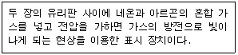
- 전계 방출형 디스플레이(FED : Field Emission Display)
- 플라즈마 디스플레이(PDP : Plasma Display Panel)
- 액정 디스플레이(LCD : Liquid Crystal Display)
- 음극선관(CRT : Cathode Ray Tube Display)
(정답률: 88%)
11. 다음 중 플로피디스크의 용량을 계산할 때 필요한 요소가 아닌 것은?
- 트랙(Track)
- 실린더(Cylinder)
- 섹터(Sector)
- 면(Side) 수
(정답률: 68%)
12. 다음의 보기와 같은 커서의 위치에서 [Ctrl] 키를 누른 채로 왼쪽 화살표 키를 세번 누른 결과로 옳은 것은?
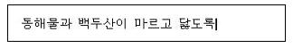
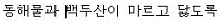
(정답률: 90%)
13. 다음 중 글꼴의 표현방식에 대하여 설명한 것으로 옳지 않은 것은?
- 비트맵 방식은 점으로 글꼴을 표현하는 방식이다.
- 아웃라인 방식은 X/Y 좌표값을 선으로 조합하여 글꼴을 만드는 방식이다.
- 명조체나 고딕체는 비트맵 방식으로 형성된 글꼴이다.
- 아웃라인 방식은 확대하면 텍스트의 선명도가 떨어진다.
(정답률: 69%)
14. 다음 중 보고심사기준이 아닌 것은?(사무관리규정 개정으로 제외된 문제입니다. 정답은 4번입니다.)
- 관계기관 등과의 사전협의 여부
- 행정용어 순화여부
- 표본조사의 가능성
- 발신방법의 지정 여부
(정답률: 91%)
15. 다음 문장을 효과적으로 입력시키기 위한 방법이 아닌 것은?
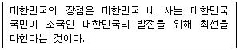
- 복사하기의 사용
- 상용구(Glossary)의 사용
- 매크로(Macro)의 사용
- 보일러 플레이트(Boiler Plate)의 사용
(정답률: 88%)
16. 다음 중 워드프로세서의 용어에 대한 설명으로 옳지 않은 것은?
- 단어의 간격을 조절하여 일정하게 유지시키는 기능을 영문 균등(Justification)이라고 한다.
- 메뉴를 선택할 때 빠르게 사용할 수 있도록 2개 이상의 키로 정의된 키를 기능 키(Function Key)라고 한다.
- 입력된 내용을 일정한 기준에 따라 재배열하는 기능을 소트(Sort)라고 한다.
- 서로 관련된 파일들을 효율적으로 관리하기 위해 모아둔 장소를 폴더(Folder)라고 한다.
(정답률: 81%)
17. 다음 중 워드프로세서에 사용되는 한글코드에 대한 설명으로 옳은 것은?
- KS X 1001 완성형 한글코드는 문자를 주기억장치에 미리 적재시킬 필요가 없기 때문에 조합형에 비해 메모리를 적게 차지한다.
- KS X 1001 완성형 한글코드는 영문과 한글 모두 2바이트로 표현한다.
- KS X 1001 조합형 한글코드는 정보 교환시 제어문자와 충돌하지 않아 정보교환용으로 주로 사용한다.
- 유니코드(KS X 10⑤-1)는 현재 한글 11,172자를 모두 표현할 수 있으며 외국 소프트웨어에서도 한글을 사용할 수 있게 되었다.
(정답률: 78%)
18. 특정 워드프로세서로 만든 문서를 다른 워드프로세서를 이용하여 읽거나 출력하려고 할 때 원래의 문서와 가장 가까운 형태로 변환하려면 어떤 형식으로 저장하는 것이 좋은가?
- 일반 텍스트 파일(*.txt)
- HTML 문서(*.html)
- 서식있는 문자열(*.rtf)
- 문서 서식 파일(*.dot)
(정답률: 83%)
19. 다음 중 교정부호 사용시 유의할 점에 대하여 설명한 것으로 옳지 않은 것은?
- 교정부호를 표시하는 색은 눈에 잘 띄게 한다.
- 교정부호는 지정한 부호를 사용해서 교정한다.
- 한 번 교정된 부분은 다시 교정할 수 없다.
- 교정부호가 너무 복잡하거나 난해하지 않도록 한다.
(정답률: 91%)
20. 다음과 같이 문장이 수정되었을 때 사용된 교정부호를 순서대로 올바르게 나열한 것은?
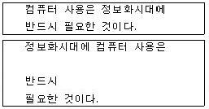
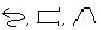
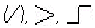
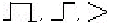
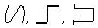
(정답률: 90%)
2과목: PC 운영 체제
21. 다음 중 한글 Windows 98에서 파일명으로 사용할 수 있는 문자는?
- ~
- \
- :
- "
(정답률: 67%)
22. 한글 Windows 98의 [찾기] 창에서 파일 또는 폴더를 찾는 방법으로 가능하지 않은 것은?
- 특정 기간 동안 변경된 파일을 모두 찾기
- 일정 횟수 이상 변경된 파일을 모두 찾기
- 일정 크기 이상의 파일을 모두 찾기
- 특정 문자열이 내용 중에 포함된 텍스트 파일을 모두 찾기
(정답률: 73%)
23. 한글 Windows 98에서 [탐색기] 창의 왼쪽에 있는 폴더 목록 표시창에 대한 설명으로 옳지 않은 것은?
- 폴더명이 'M'으로 시작하는 폴더가 하나만 있는 경우에 'M' 키을 누르면 해당 폴더가 선택된다.
- 숫자 패드의 '+' 키를 누르면 선택된 폴더의 최하위 까지의 모든 하위 폴더를 항상 표시해준다.
- 왼쪽 방향키(←)를 누르면 선택된 폴더가 열려있을 때는 닫고, 닫혀 있으면 상위 폴더가 선택된다.
- [Back Space] 키를 누르면 상위 폴더가 선택된다.
(정답률: 74%)
24. 한글 Windows 98에서 TCP/IP 정보를 구성하는 항목에 관한 설명으로 옳지 않은 것은?
- IP 주소는 네트워크와 호스트 이름을 의미하는 32비트 숫자로 되어 있다.
- DNS는 숫자로 된 IP 주소를 문자로 된 주소로 바꿔 주는 역할을 한다.
- 게이트웨이(Gateway)는 주로 LAN에서 다른 네트워크에 데이터를 보내거나 다른 네트워크로부터 데이터를 받아들이는 통신 기능을 수행한다.
- 서브넷 마스크(Subnet Mask)는 IP 주소와 결합하여 사용자의 컴퓨터가 속한 네트워크를 식별한다.
(정답률: 60%)
25. 한글 Windows 98에서 하드 디스크에 파일을 저장하는 중에 디스크 공간이 부족하다는 메시지가 출력되었을 때, 문제 해결 방법으로 옳지 않은 것은?
- 휴지통을 비워 공간을 확보한다.
- 사용하지 않는 윈도우의 구성 요소를 삭제한다.
- 불필요한 파일을 다른 곳으로 백업한 후에 디스크에서 삭제한다.
- [디스크 검사]를 실행하여 공간을 확보한다.
(정답률: 63%)
26. 다음 중 한글 Windows 98의 [도움말]에 대한 설명으로 옳지 않은 것은?
- [시작] 메뉴의 [도움말]을 선택하여 실행한다.
- [목차] 탭에서 아이콘은 하위 항목이 표시되어 있음을 의미하며, 클릭하면
 아이콘으로 변하면서 하위 항목을 숨겨준다.
아이콘으로 변하면서 하위 항목을 숨겨준다. - [도움말]은 하이퍼텍스트 형식을 지원하지 않는다.
- [도움말] 창의 [색인] 검색 방법은 찾는 단어의 처음 몇 글자를 입력하면 해당 글자가 포함된 항목을 자동으로 찾을 수 있다.
(정답률: 75%)
27. 다음 중 한글 Windows 98의 문서 편집기인 [메모장]에서 사용할 수 없는 기능은?
- 글자 색상 지정과 글꼴의 크기 설정
- 머리글과 바닥글 작성
- 시스템의 날짜와 시간을 [편집] 메뉴에서 바로 입력
- 출력 용지 및 여백 설정
(정답률: 71%)
28. 한글 Windows 98에서 시동 디스크에 관한 설명으로 옳지 않은 것은?
- Windows 시작에 문제가 있을 때는 시동 디스크를 사용하여 시스템을 부팅할 수 있다.
- 시동 디스크를 만들려면 [제어판]의 [프로그램 추가/제거] 등록정보 창에서 [Windows 설치] 탭을 선택하여 설정한다.
- 문제 발생에 대비하여 시동 디스크를 만들어 놓는 것이 좋다.
- 시동 디스크를 만들려면 적어도 1.2MB 용량의 플로피 디스크 한 장이 필요하다.
(정답률: 56%)
29. 한글 Windows 98의 기능 중에서 컴퓨터 찾기에 대한 설명으로 옳은 것은?
- NetBEUI 프로토콜로 연결된 컴퓨터를 찾을 수 있다.
- 네트워크로 연결된 컴퓨터 내의 모든 내용을 볼 수 있다.
- 네트워크 사용자에 대한 메일 주소 정보를 볼 수 있다.
- 현재 사용중인 컴퓨터에 공유 폴더가 있어야만 컴퓨터를 찾을 수 있다.
(정답률: 68%)
30. 한글 Windows 98에서 [시작] 메뉴에 대한 설명으로 옳지 않은 것은?
- [시작] 메뉴에는 프로그램, 문서, 설정, 찾기, 실행 등의 메뉴가 있다.
- [Ctrl] + [Esc] 키를 누르면 [시작] 메뉴가 나타난다.
- [시작] 단추에서 마우스 오른쪽 버튼을 클릭하면 열기, 탐색, 찾기 등의 메뉴가 나타난다.
- [시작] 메뉴에 프로그램을 등록하면 Windows 시작시 자동으로 실행된다.
(정답률: 68%)
31. 한글 Windows 98의 [제어판]에 있는 [사운드]의 등록정보 창을 이용하여 수행할 수 있는 작업이 아닌 것은?
- 시스템에 설치된 사운드 하드웨어의 제거
- 시스템에 설정된 상황별 기본 사운드 미리 듣기
- 시스템에 설정된 상황별 사운드 변경
- 시스템의 사운드 구성표 설정
(정답률: 65%)
32. 한글 Windows 98의 [그림판]에서 마우스의 오른쪽 버튼을 누른 상태로 연필과 붓을 사용하여 그림을 그린 경우에 설명으로 옳은 것은?
- 연필과 붓 모두 전경색으로 그려진다.
- 연필과 붓 모두 배경색으로 그려진다.
- 연필은 전경색, 붓은 배경색으로 그려진다.
- 연필은 배경색, 붓은 전경색으로 그려진다.
(정답률: 74%)
33. 한글 Windows 98에서 FTP 프로그램으로 할 수 있는 일이 아닌 것은?
- 원격지로 파일 보내기
- 원격지로부터 파일 받기
- 원격지에 있는 프로그램을 실행하기
- 원격지의 폴더를 오픈하기
(정답률: 56%)
34. 한글 Windows 98에서 PnP(Plug & Play)를 지원하는 하드웨어는 Windows가 자동으로 감지하여 필요한 환경을 설정한다. 다음 중 PnP에 의해서 자동으로 설정되는 정보가 아닌 것은?
- IRQ
- DMA
- I/O 주소
- IP 주소
(정답률: 53%)
35. 다음은 한글 Windows 98 사용에 대한 설명으로 옳지 않은 것은?
- [Ctrl]를 누른 채 다른 창으로 파일 끌기를 하면, 파일을 복사할 수 있다.
- [Print Screen]를 누르면, 바탕 화면 전체가 클립보드로 복사된다.
- 여러 창을 화면에 만들었을 때 <Alt> 키를 누른 채 [Tab]를 누르면 다른 창으로 전환된다.
- [F1]를 누르면 선택한 파일, 폴더 등의 이름을 바꿀 수 있다.
(정답률: 82%)
36. 한글 Windows 98의 바탕화면에서 아이콘과 아이콘 사이의 간격을 줄이려고 할 때 사용하는 방법으로 옳게 설명한 것은?
- [제어판] - [디스플레이] - [화면배색]에서 항목 란의 아이콘 간격(수직)과 아이콘 간격(수평)을 선택한 후에 크기 값을 줄인다.
- [제어판] - [시스템] - [장치관리자] - [모니터]의 단축메뉴에서 아이콘 간격을 선택한 후에 크기 값을 줄인다.
- [제어판] - [디스플레이] - [설정] - [고급]에서 아이콘 항목 옆의 숫자 값을 줄인 후 적용을 선택한다.
- [제어판] - [바탕화면테마] - [포인터 사운드] 등을 선택한 후 화면 탭에서 내 컴퓨터 아이콘을 선택하여 숫자 값을 줄인다.
(정답률: 55%)
37. 다음 중에서 한글 Windows 98의 [그림판] 프로그램을 이용하여 작업하는 과정에서 그림에 효과주기 항목으로 거리가 먼것은?
- 레이어 작업
- 대칭 이동/회전
- 늘리기/기울이기
- 색 반전
(정답률: 80%)
38. 다음 중 한글 Windows 98에서 하드웨어 장치에 대한 지원 기능으로 가능하지 않은 것은?
- NTFS 지원
- FAT 32 지원
- USB 지원
- DVD 지원
(정답률: 47%)
39. 한글 Windows 98에서 공유할 드라이브 또는 폴더의 등록 정보에서 공유와 관련된 설정 내용으로 옳지 않은 것은?
- 네트워크 상에서 검색할 때 공유할 자원의 이름에 대한 설정
- 읽기 전용이나 읽기/쓰기에 대한 설정
- 암호에 따른 사용 권한에 대한 설정
- 공유할 파일의 형식에 대한 설정
(정답률: 44%)
40. 한글 Windows 98에서 인터넷을 사용하기 위해 TCP/IP 프로토콜을 설치하려고 할 때, 다음 보기들의 진행 절차가 옳은 것은?
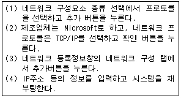
- (4)-(3)-(1)-(2)
- (3)-(1)-(2)-(4)
- (1)-(2)-(3)-(4)
- (4)-(2)-(3)-(1)
(정답률: 65%)
3과목: 컴퓨터 및 정보활용
41. 하드디스크를 추가로 하나 장착하려고 한다. 작업 순서를 가장 바르게 나열한 것은?
- 점퍼 확인 → CMOS 셋업 → Format → Fdisk
- 점퍼 확인 → CMOS 셋업 → Fdisk → Format
- CMOS 셋업 → 점퍼 확인 → Format → Fdisk
- CMOS 셋업 → 점퍼 확인 → Fdisk → Format
(정답률: 63%)
42. 파일 압축에 대한 설명 중 옳지 않은 것은?
- 디스크 저장 공간을 효율적으로 활용하기 위해서 압축을 한다.
- 압축 소프트웨어에는 밤톨이, WinZip, 알집 등이 있다.
- 감염된 파일을 압축하면 바이러스가 제거된다.
- PC 통신에서 파일 전송 시 시간 및 비용을 절약하기 위해 사용된다.
(정답률: 85%)
43. 다음 중에서 LAN을 매체접근 제어방식으로 분류하였을 경우, 이에 해당되지 않는 것은?
- CSMA/CD
- 토폴로지(Topology)
- 토큰링(Token Ring)
- 토큰버스(Token Bus)
(정답률: 71%)
44. 초고속 정보 통신망을 이용하여 원거리에 있는 사람들과 비디오와 오디오를 통해 회의할 수 있도록 하는 시스템은 무엇인가?
- VOD
- RACS
- VCS
- VDT
(정답률: 66%)
45. 스캐너를 이용하여 받아들인 이미지 형태의 문서를 이미지 분석과정을 통하여 문자 형태의 문서로 바꾸어 주는 소프트웨어를 무엇이라 하는가?
- OMR 소프트웨어
- Retouching 소프트웨어
- 이미지 편집 소프트웨어
- OCR 소프트웨어
(정답률: 57%)
46. 다음 중 멀티미디어 소프트웨어에 관한 설명으로 옳지 않은 것은?
- 멀티미디어에 사용되는 영상은 많은 용량을 차지하므로 저장할 때는 압축하여 저장하는 소프트웨어도 있다.
- 멀티미디어 저작 도구를 이용하여 프로그램을 구축하기 위해서는 C 언어와 HTML을 알고 있어야만 가능하다.
- 멀티미디어 저작 도구를 이용하여 프리젠테이션, 광고, 전자출판, CD-ROM 타이틀 제작 등을 한다.
- 멀티미디어 소프트웨어는 음성, 그림, 영상 등의 미디어를 생성, 저장, 가공, 전송 등을 하는 프로그램이다.
(정답률: 75%)
47. 다음 중 문자를 표현하는 코드체계가 아닌 것은?
- Hamming Code
- ASCII
- EBCDIC
- KS X 10⑤-1
(정답률: 78%)
48. 일반 가정에서 인터넷으로 널리 사용하는 ADSL에 대한 설명으로 옳은 것은?
- 동축 케이블을 사용하여 고속의 데이터 통신을 제공한다.
- 대칭형 디지털 가입자 회선이다.
- 영상 회의, 원격 진료 등과 같은 양방향 서비스에 가장 적합한 방식이다.
- 전화는 낮은 주파수를, 데이터 통신은 높은 주파수를 이용한다.
(정답률: 75%)
49. 다음 중 웨이브(WAVE) 방식에 대한 설명으로 옳지 않은 것은?
- 샘플링하여 이를 디지털화한 값으로 저장한다.
- 웨이브(WAVE) 파일을 생성하기 위하여 사운드 카드를 사용한다.
- 음악에서 사용되는 음의 특색을 기호로 정의하여 이의 내용을 저장한다.
- PCM 기법에 의해 생성된 디지털 데이터를 사용한다.
(정답률: 57%)
50. 서로 다른 프로토콜로 운영되는 네트워크에서 최적의 경로를 결정하는 네트워크 장비는 무엇인가?
- 리피터
- 모뎀
- 라우터
- 더미 허브
(정답률: 77%)
51. 다음 중 인터넷 관련 프로토콜이 아닌 것은?
- TCP
- ARP
- FTP
- ISO
(정답률: 73%)
52. 한 시스템에서 멀티 프로그래밍이 가능한 이유를 가장 잘 설명한 것은?
- 한 CPU에서 동시에 여러가지 명령을 처리할 수 있으므로 가능하다.
- 멀티 프로그래밍이 가능할려면 여러 개의 CPU가 있어야 하며 각 CPU가 각자의 프로그램을 실행하므로 가능하다.
- 똑같은 프로그램인 경우에만 2개 이상의 동시 실행이 가능하며 사실상 하나의 프로그램이 실행되는 것이다.
- 각 프로그램이 주어진 작은 시간만큼 CPU를 사용하고 반환하는 것을 반복하므로 가능하다.
(정답률: 57%)
53. 다음 보기의 내용은 무엇에 대하여 설명한 것인가?
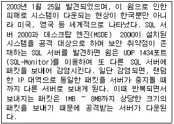
- 백오리피스
- Laroux 바이러스
- 슬래머 바이러스
- 멜리사 바이러스
(정답률: 62%)
54. 다음 중 보안 관련 용어에 대한 설명으로 옳지 않은 것은?
- 해킹이란 컴퓨터 시스템에 불법적으로 접근, 침투하여 시스템과 데이터를 파괴하는 행위이다.
- 웜(worm)이란 네트워크를 통해 연속적으로 자신을 복제하여 시스템의 부하를 높이는 바이러스의 일종이다.
- 디지털 서명이란 송신자의 신분을 보증하는 암호화된 데이터로서, 메시지에 덧붙여 보내기도 한다.
- 트로이 목마(Trojan Horse)란 외부(인터넷)로부터의 침입을 막기 위하여 격리시키는 시스템이다.
(정답률: 77%)
55. CPU 스케줄링은 다중 프로그래밍을 가능하게 하는 운영체제의 기본이 된다. 다음 중 스케줄링에 대한 설명으로 옳지 않은 것은?
- CPU를 요구하는 순서로 할당하는 방법은 FIFO 큐로서 구현된다.
- 단위 시간당 완료되는 작업의 수를 CPU 사용률이라고 한다.
- 반응시간은 요구를 의뢰한 시간과 반응이 시작되는 시간까지를 말하며 대화형 시스템에서 중요한 성능 평가요소가 된다.
- 정의된 시간 간격 만큼씩 CPU를 제공하는 것을 라운드 로빈 스케줄링 방식이라고 한다.
(정답률: 60%)
56. 응용 소프트웨어는 수준별로 여러가지 유형으로 나눌 수 있다. 다음 중 개인용 응용 소프트웨어와 가장 거리가 먼 것은 무엇인가?
- Wordprocessor
- Spreadsheet
- Painting
- Enterprise Resource Planning
(정답률: 59%)
57. 다음 중 공개키 암호화 기법에 대한 설명으로 옳지 않은 것은?
- 이중키 암호화 기법이라고도 한다.
- 암호화키와 복호화키가 서로 다르다.
- 대표적인 알고리즘으로 RSA가 있다.
- 비밀키 암호화 기법에 비해 암호화와 복호화의 속도가 빠르다.
(정답률: 69%)
58. 다음 중 아날로그 영상을 디지털 영상으로 전송하고, 수신 후 아날로그 영상으로 복원하는 과정을 올바르게 표시한 것은 무엇인가?
- 아날로그 영상 → 부호화 → 디지털 영상 → 부호화 → 아날로그 영상
- 아날로그 영상 → 부호화 → 디지털 영상 → 복호화 → 아날로그 영상
- 아날로그 영상 → 복호화 → 디지털 영상 → 부호화 → 디지털 영상
- 아날로그 영상 → 복호화 → 아날로그 영상 → 복호화 → 디지털 영상
(정답률: 84%)
59. 여러 입출력 장치와 컴퓨터 본체의 연결 방법 중 허브 구조로 연결이 가능하며 최대 127대까지의 외부장치를 연결할 수 있는 방식은 어느 것인가?
- AGP(Accelerated Graphics Port)
- SATA(Serial ATA)
- SCSI(Small Computer System Interface)
- USB(Universal Serial Bus)
(정답률: 84%)
60. 다음은 DMA(Direct Memory Access)입출력 제어기에 대한 설명이다. 올바르지 않은 것은?
- CPU를 거치지 않고 입출력장치와 메모리간에 입출력 데이터를 전송한다.
- 하나의 입출력 명령어에 의하여 여러 개의 데이터 블록을 입출력 할 수 있다.
- 주기억장치에 접근하기 위해 사이클 스틸(Cycle steal)을 사용한다.
- 중앙처리장치의 효율을 향상시킨다.
(정답률: 43%)
- 포인트는 문자의 크기 단위로 1포인트는 보통 0.351mm이다. (옳은 설명)
- 장평이란 문자의 가로 크기에 대한 세로 크기의 비율을 말한다. (옳은 설명)
- 줄(행) 간격이란 윗줄과 아래줄의 간격으로 단위는 줄에서 크기가 가장 큰 글자를 기준으로 간격을 조정하는 비례 줄 간격 방식을 디폴트로 제공한다. (옳은 설명)
- 자간이란 문자와 문자 사이의 간격을 의미한다. (옳은 설명)